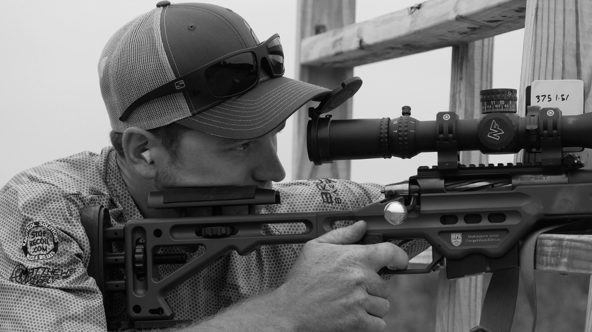
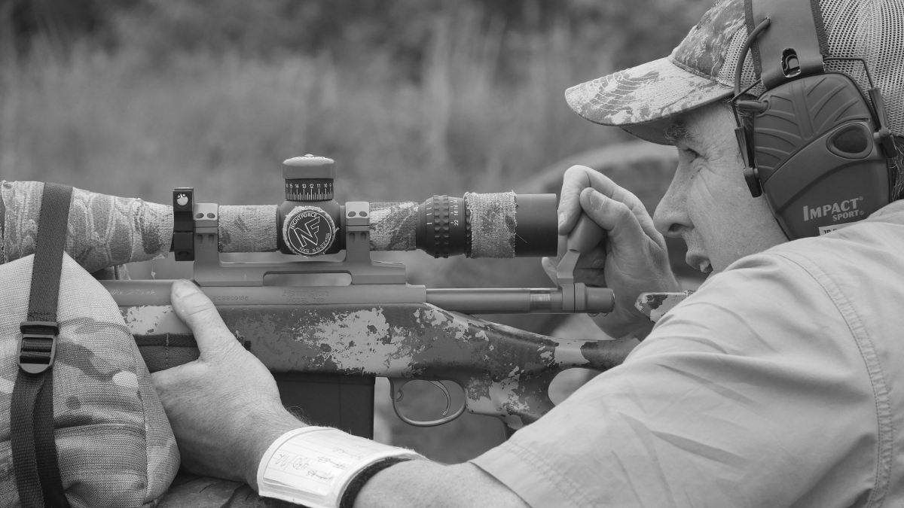
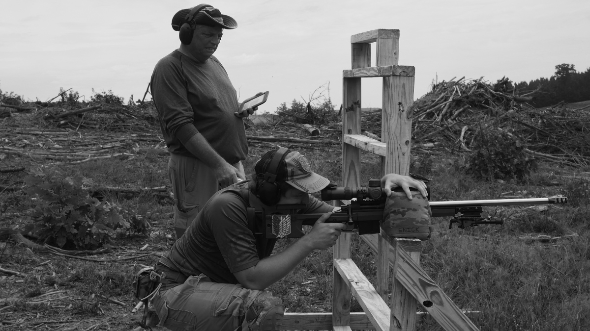
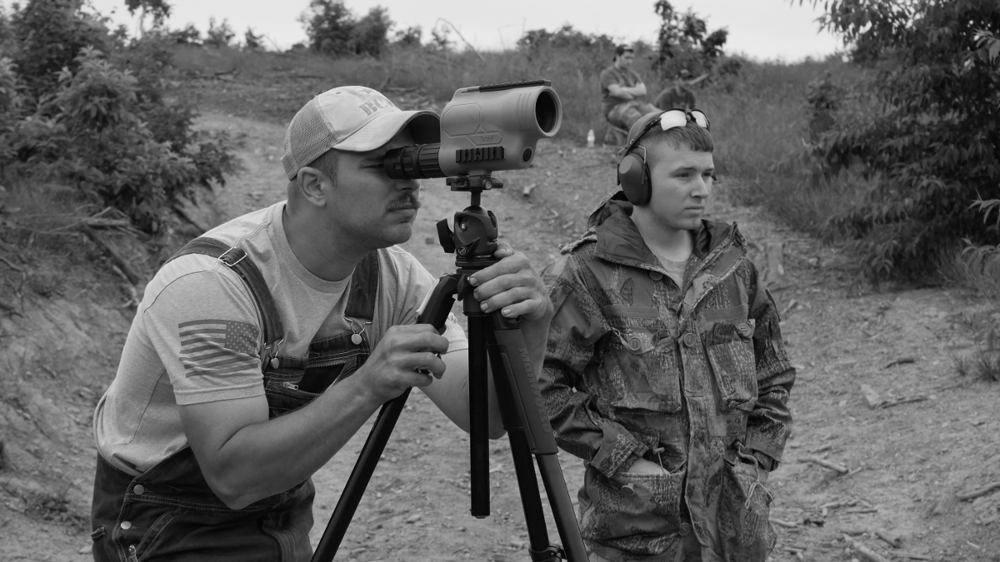
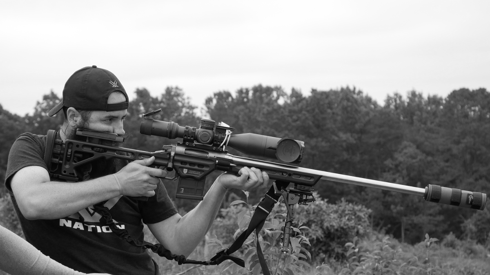
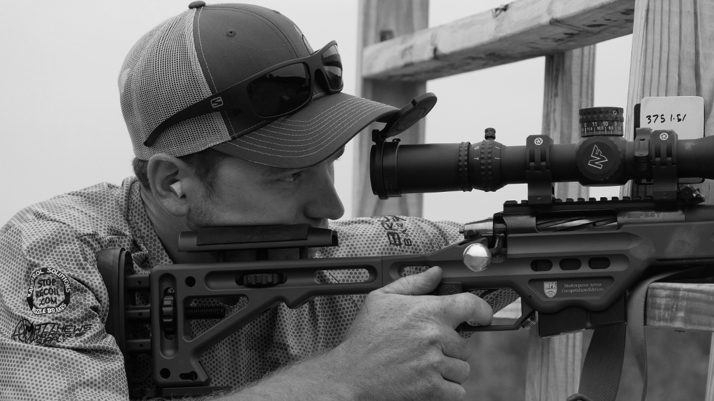
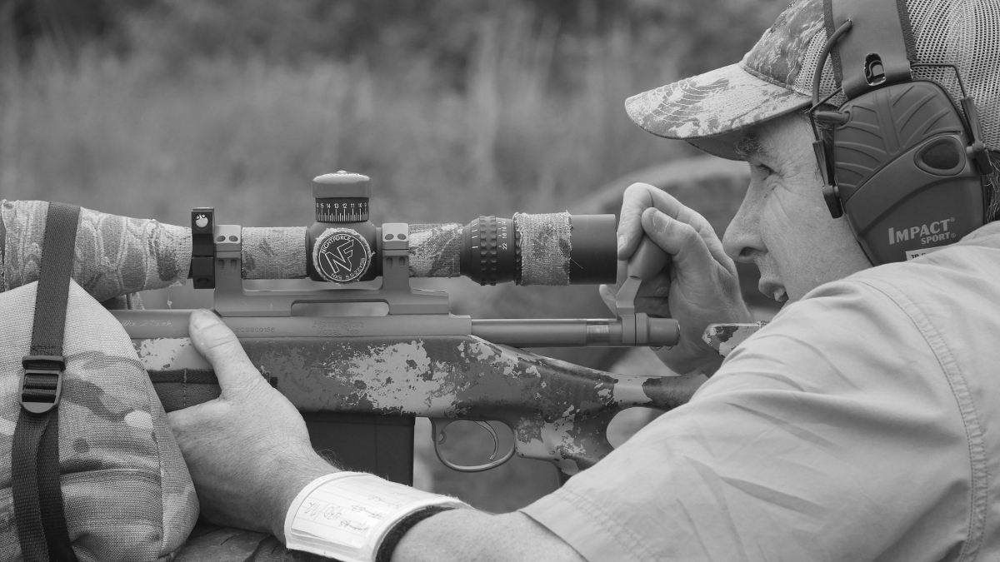
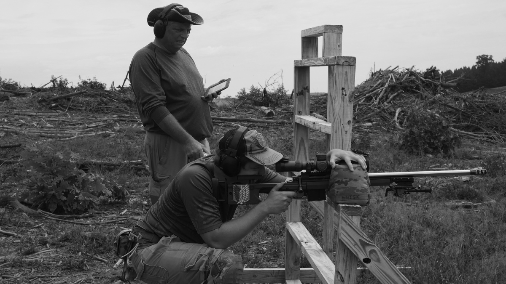
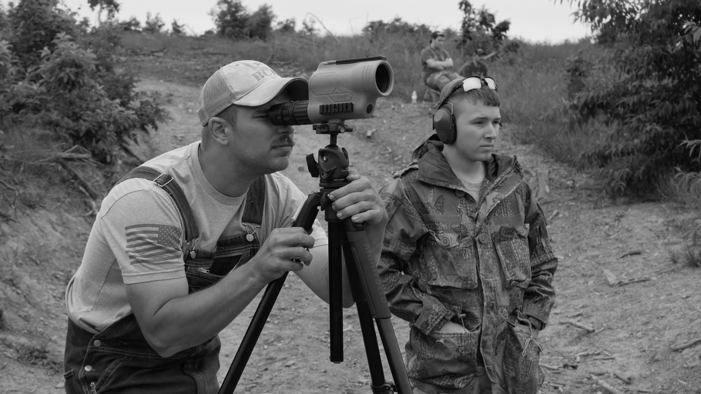
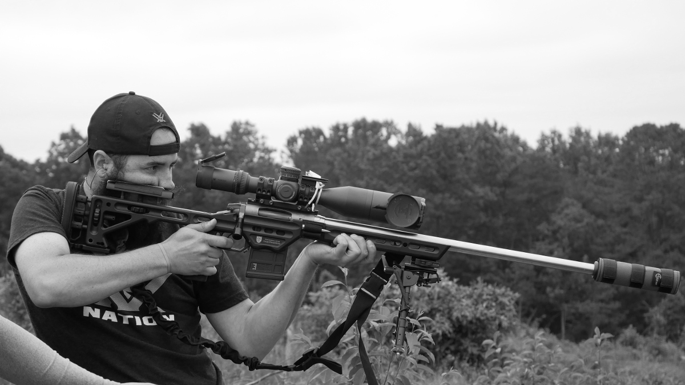

Registration will open for the top 60 shooters on Sunday, 8/6 /2017 at 6PM! Registration is open on Practiscore!
2017 VPRC Season Finale - The Rifleman's Revival
The time is here! It's been a year since the inaugural VPRC match and the 2016-2017 Season Finale is upon us! This match will be known as The Riflemans Revival presented by Reasor Precision Solutions on September 24th 2017.
Our matches have grown significantly, going from 16 shooters at the first match to 60 slots filling up in 3 hours. We are proud to announce that Reasor Precision Solutions will be the title sponsor for the match!
Alongside Reasor we also have many other sponsors, ranging from one man shops to major vendors you know and love! We will be hosting a vendor day with our sponsors the day before the match, September 23rd. Demo day will have a 22 side match presented by Suppressed Weapon Systems and a milling/ranging competition.
The match will have cash prizes for the top winners, and the sponsored prizes will be for the overall series.
If you would like to see examples of past stages, check out the gallery for photos and videos of previous matches.